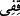
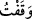
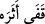
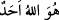

Karîb, Kàbid, Kàdî, Kuddûs, Kayyûm gibi Allah Teâlâ’nın kaf harfi ile başlayan
isimlerinin anahtarıdır. Yani burada “Kaf”, zikredilen isimleri ifade etmek üzere “Ben
Kàdir’im, Kadîr’im, Kadîm’im, …” anlamında kullanılmıştır.
“Kaf”ın Kur’ân’ın isimlerinden birisi olduğu, “Adaletle hükmeden Allah hakkı için”
anlamında bir yemin olduğu, “De ki ey Peygamber! O şerefli Kur’ân’a yemin olsun ki..”
anlamında kullanıldığı söylenmiştir.
“Peygamberlik görevini yerine getirirken, emir ve nehiylerimiz konusunda titiz
davran” anlamında kullanıldığı da söylenmiştir. Nitekim Araplar bazen bir kelimeyi
ifade etmek üzere o kelimeden bir harfi kullanırlar. Mesela şâir şöyle der:
Ona “__WORD__/dur” dedim. O da “__WORD__/durdum” anlamında “__WORD__” dedi.
“__WORD__/tâbi oldu” anlamındaki fiilin mufâ‘ale bâbından “tâbi ol” anlamında emir kipi
olduğu da söylenmiştir. Bu şekilde, “Kur’ân’la amel et ve ona tâbi ol!” demek olur.
“İş, olacak olan şey hükme bağlandı.” Aynı mânâ ifadesi için de söylenmiştir.
“Kur’ân’ı Levh-i Mahfûz’da ve mushaflarda yazan kalem hakkı için” anlamında
kullanıldığı söylenmiştir.
Kâşifî şöyle der: “Mukatta‘a harfleri nazım ve nesirle söylenen sözün arasını fark
etmek, ayırmak içindir. İmam İlmü’l-Mehdî buyurmuştur ki: «Bir kimse sadece bu
harfleri işitmekle, bundan sonra gelecek ifadenin manzum değil nesir olacağını anlar.»
Bu harflerin îrâd edilmesi, Kur’ân’a şiirdir diyen bir topluluğu reddetmek içindir.
Antakî demiştir ki; «kaf, Allah’ın “Ona daha yakınız” (Kaf, 50/16) sözündeki
kurbetten, yakınlıktan ibârettir. Yani İlâhî yakınlığa yemindir. Bu sûrede Allah’ın “O’na
şahdamarından daha yakınız” sözündeki sırdan haber verilmektedir.”
İbn Atâ şöyle der: Allah Teâlâ burada habîbinin kalbinin kuvvetine yemin etmiştir.
Nitekim O, vahye muhâtap olmuş, harikulade şeyleri müşâhede etmiş, hâl ve makamının
yüksekliğinden dolayı kalbinde bu durumun bir tesiri olmamıştır. Hâlbuki Musa (a.s.) bu
durumun aksine Tûr dağında nûrun tecellisinin şiddetinden dolayı baygın düşmüştür
(bkz. A‘raf, 143).
et-Te’vilatü’n-Necmiyye isimli eserde şöyle denilmiştir: Burada Allah yoluna girmiş
her bir kimsenin Allah’a yakınlık konusunda bir makâmı olduğuna, kendisi için takdir
edilmiş olan bu makama ulaştığında buradaki “Kaf” ile ona “Dur orada, sınırını aşma”
denilmiş olduğuna bir işâret vardır. Hemen bu “Kaf”ın akabindeki yemin de burayla
irtibatlı olarak şu anlama gelir: “Dur! Şerefli Kur’ân’a yemin olsun ki burası senin
makâmın, bu sınırı aşma!”
Büyüklerden birisi şöyle demiştir: Buradaki “Kaf” ihlâs sûresinin başındaki “__WORD__e yani taayyün-i evvel olan ahadiyyet mertebesine işârettir. “Sâd”, “Samed”e yani
taayyün-i sânî olan samediyyet mertebesine işârettir. “Sâffât”, taayün-i sânîye tâbi olan
diğer taayyünlere işârettir.
Fakîr (Bursevî) şöyle der: Allah Teâlâ buradaki “Kaf” sözü ile Hz. Peygamber
(s.a.)’in her şeyden önce her bir terkipten uzak, her bir oluştan münferid ve her bir